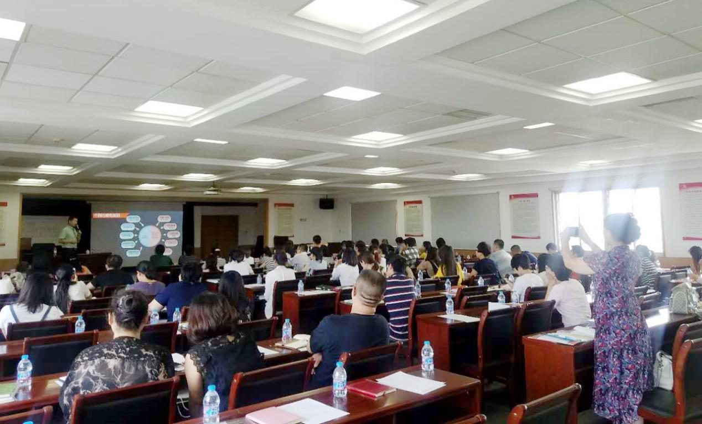

时间是不等人的，2017年已悄然过了大半，但学习却是永无止境的。2017年8月25日下午，人事人集团联合天津市武清开发区，在其创业总部基地举办了一场以《金税三期时代个人所得税风险与筹划》为主题的沙龙培训活动。此次活动共邀请到100多位来自各大知名企业的CEO、人力资源总监/经理、财务总监/经理莅临现场。同时，本次活动还受到了天津相关政府部门的高度重视。
本次的主题活动由人事人外部专家顾问、忠德财税合伙人、前五洲投资集团美联臣CFO、北京大学医学部客座讲师孙长民先生，为大家带来了了“金税三期时代个人所得税税收筹划”的专题分享。
孙先生在以税法为导向，事先筹划的大原则下，首先阐明了税收筹划的基本概念、与个税相关的基础知识；又详细列举了轻松掌握个税筹划的方式；还为大家构建了能够带来最大利益化的个人纳税方案。一系列的分享充分体现了数据时代的精确与力量，可谓精彩绝伦。

时间在孙老师精彩的讲解中一晃而过。此次《金税三期时代的个人所得税风险与筹划》为主题的沙龙培训活动圆满落幕。时间的脚步不会停留，知识的海洋也浩瀚无垠。让我们在学习中不断成长，为了企业，也为了我们自己更美好的明天！
人事人集团
人事人集团总部位于北京，旗下的人力服务机构最早的成立于2008年，是中国快速发展的人力资源外包服务机构；致力于成为中国人力成本优化服务专家，让人力资本实现最大价值，从而推动社会发展，并让我们的世界变得更加美好。
人事人主营业务包括：社保管理、薪酬管理、员工福利、劳务派遣、岗位外包等多个专业人力资源外包服务领域。
目前，人事人已累计为10000 多家客户提供了专业的人力资源外包服务，在业内积累了很高的声誉。涉及金融、餐饮、酒店、互联网、咨询等众多行业，并成为神州数码、首创集团、泸州老窖、万盛行、恒大集团、中国电信、LG、苏宁金融、好利来、屈臣氏、河狸家、碧生源、101远程教育网、中铁物流集团等行业知名企业首选的人力资源战略合作伙伴!
文章来源：http://www.mrjjxw.com/syxw/18968738.html